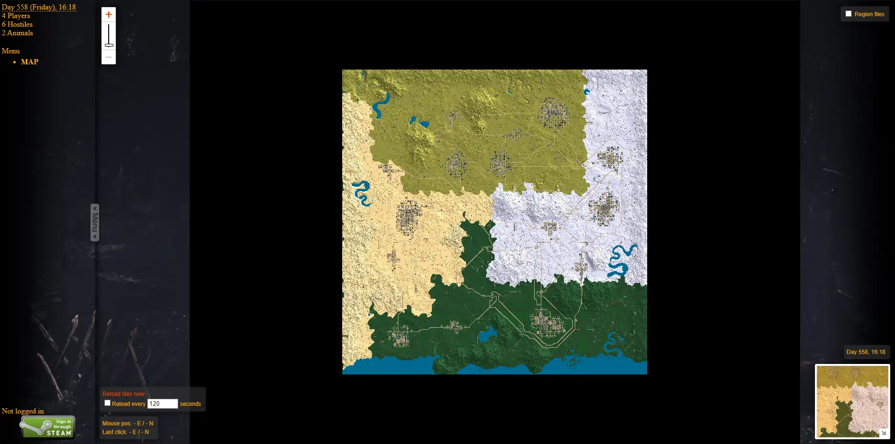
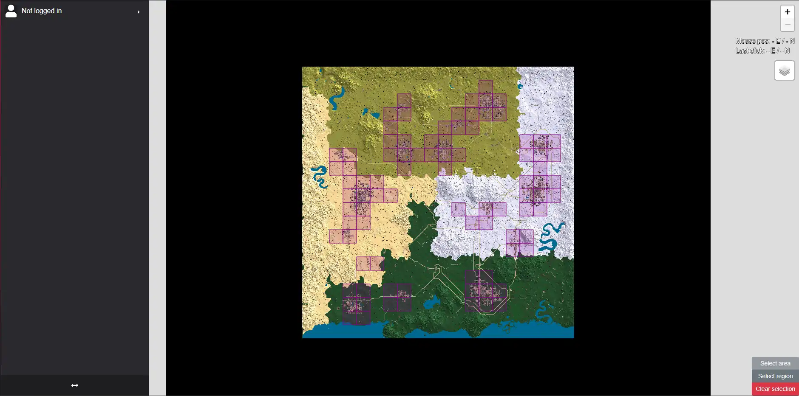

Liens utiles
Retrouvez ici une liste de tout les liens permettant de vous informer ou de soutenir les Fraternels et sa communauté.
Livemap
Les livemaps sont des représentations en temps réel de la carte d'un serveur. Elles peuvent permettre de vous localiser, de déterminer les emplacements des villes et bâtiments proches, permettent de retrouver vos véhicules en cas de problèmes et permettent d'identifier les emplacements des "Reset Zone", zones qui régénèrent les blocs détruits au bout d'un certain interval de temps ou lors d'une manipulation manuelle effectuée par l'administrateur du serveur.
Nous disposons de 2 livemaps actuellement et chacune d'elles ont des rôles différents :
Live map N°1
 http://176.57.168.125:8142/Cette carte permet de vous localiser en temps réel, de voir l'heure et le jour du serveur, afficher le nombre de joueurs actuellement connectés et permet de voir l'emplacement de vos zones de revendication.
Live map N°1
 http://176.57.168.125:8143/Cette deuxième carte quant à elle permet principalement de déterminer l'emplacement de vos véhicules lorsque ces derniers sont victimes d'un bug ou que vous les avez perdus pour n'importe quelle raison que ce soit.